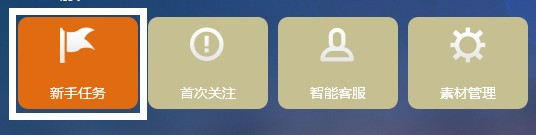
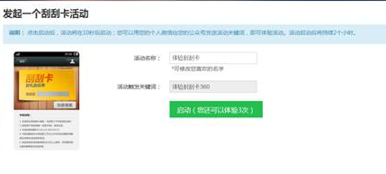
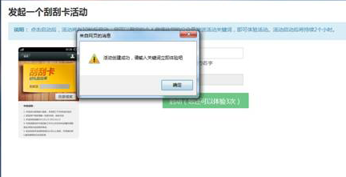

对于新用户而言，初次登陆进来，看到有这么多功能，一时间可能无从下手，不知道要从哪坐起，如何操作，但是实际上，我们提供的功能模块的设置方法基本原理都是相似的，只要对一两个活动的设置方法了解了，就基本了解了所有功能的操作方法，所以为了指引大家新建一个活动，并且体验一下活动在手机上的实际效果，在新用户首次登陆时，就会弹出新手任务。下面我们就来设置一下新手任务
一、选择新手任务。如图：
二、选择启动按钮，10秒钟以后，这个活动就已经生效了，这个时候，只要您用个人微信账号向您绑定的公众账号发送关键词“刮刮卡”，就可以触发活动了。
注：新手任务中的活动的关键词是随机变化的。
三、点击启动以后，出现活动创建成果的对话框，说明活动已经创建成功了，快去体验吧。
